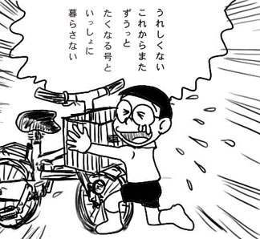

会社から帰ると手紙が届いていました。
「貴殿が平成11年に盗難届けを出された自転車が発見になり…」！！
「受領をお願いします…」！！
「岩槻警察署 刑事課…」！！
うわー何か事件に巻き込まれてますか、たくなる号(my自転車)は。でも、しかし、諦めていた岩槻たくなる号が帰って来たというのは大変うれしいのです。
「事前に電話連絡をよろしくお願いします…」！！
僕が駐輪してた間にひったくり犯を捕まえるのに活躍した。とかそういうプラスの想像をするはずもなく、もちろん頭では、
「罰金っ…！
ざわ……
ざわ……」
という文字が福本チックに飛び交います。
とりあえず会社を午前半休して刑事課に電話。「今日来られる？」(やたらと気さくに)と聞かれるので「はい」と答えます。
「あーそれから受領印が欲しいので印鑑持って来て」
と言われたのに対して思わず
「それだけでいいんですか？」
と聞き返します。それだけでいいそうなのでいそいそと出かけます。
途中、健康食品セミナーと称して小さな事務所にたっくさんのおばさんおじさんが詰め込まれながら一生懸命メモを取っているのをみかけて心底憂鬱な気分に。こんなに晴れてるのになぁ。
結局罰金はなかったです。しかし、折り畳みたくなる号に慣れた身にはすごく重く感じられる岩槻たくなる号です。
とりあえず、蜘蛛の巣を取り払うところから始めたいと思います。